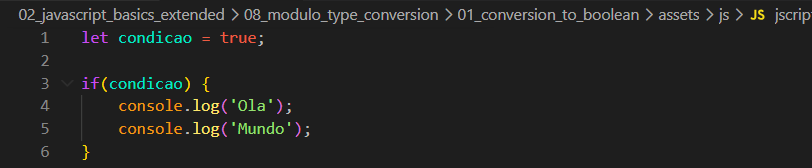
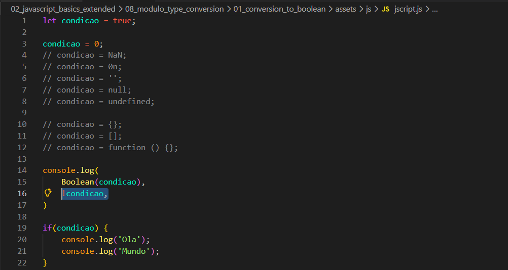
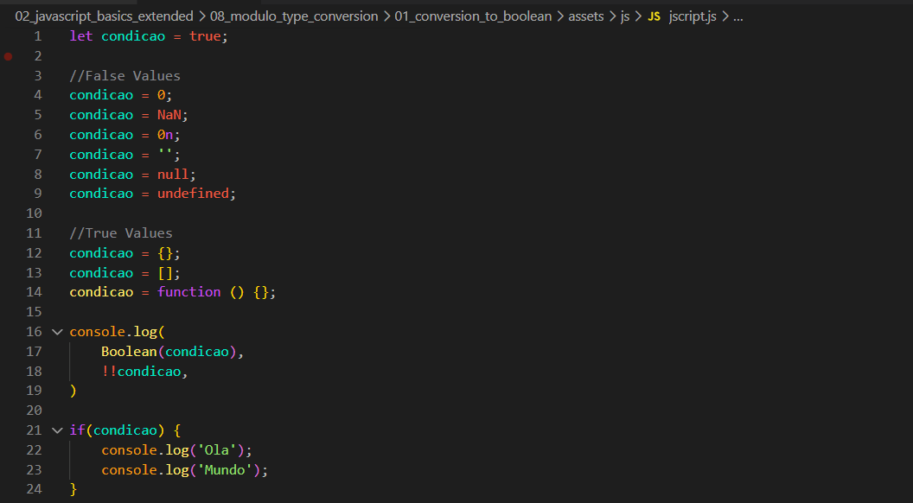

Conversion to Boolean
Intro
Aqui teremos o seguinte codigo como exemplo:

Aqui teremos o seguinte codigo como exemplo:

Temos como exemplo nesse codigo uma condicional onde seja true (verdadeira), sera verificado e imprimido a mensagem em nosso console. Como nesse caso declaramos a variavel como true,quando o condicional avalia nossa condicao, iremos ter a impressao passada em nosso console.
Caso mudemos para false, nao ira mais ser impresso em nosso console. Porem nao sao apenas os valores de true ou false que teremos como resultado de nosso codigo.
Podemos tambem ter uma condicao onde nosso valor 0, por exemplo se passarmos o valor de nossa variavel para 0, o valor tambem ainda nao sera imprimido em nosso console. Isso ocorre pois se o valor de 0 ira ser interpretado como false.
Isso tambem ocorrera para outras opcoes como: NaN, 0n e etc. Tem uma forma de podermos verificar rapidamente essa condicional, nao apenas ela, como as que precisarmos. Para isso podemos colocar uma negacao em nossa variavel para podermos fazer alguns testes. Ficando da seguinte forma:

Com uma negacao (1), conseguimos inverter o resultado de boolean.
Com duas negacoes(!!), invertemos novamente nosso valor. Ou seja se nosso resultado e true e fazemos uma negacao ele passa para false e se fizermos duas, ele volta para true.
Se temos uma string vazia, ela tem como resultado false, mas a partir do momento que e passado algo, mesmo que seja um espaco, ela se torna true.
Um objeto vazio é true.
O mesmo ocorre com um array vazio, ele tambem e true.
Tambem tem como resultado true.
